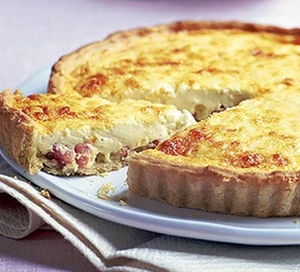

Quiche Lorraine

Description
TThe key to making the perfect quiche is simplicity, as you can see with this delicious recipe.
Ingredients
- Lardons: Smoked or not smoked: this is an important question.
Everybody in France has its own opinion on this so, why shouldn't you?.
Concerning the quantity, 200 gr should do it.
- Gruyère: You can also use Emmental. In any case, about 50 gr are needed.
- Sour cream: Yes, we did not say it is light or healthy, especially
considering that we put 400 ml of it!
- Eggs: Three eggs, well beaten. I personally use XL of at least 70 gr each.
- Nutmeg: A pinch of ground nutmeg will give a great touch.
- Pastry: If you want to keep it simple, buy your favorite brand.
Steps
- Line a 23 x 2.5cm loose-bottomed, fluted flan tin,
easing the pastry into the base.
- Trim the pastry edges with scissors (save any trimmings) so it sits
slightly above the tin (if it shrinks, it shouldn’t now go below the level of the tin).
Press the pastry into the flutes, lightly prick the base with a fork, then chill for 10 mins.
- Put a baking sheet in the oven and heat oven to 200C/fan 180C/gas 6.
Line pastry case with foil, shiny side down, fill with dry beans and bake on the hot sheet
for 15 mins.
- Remove foil and beans and bake for 4-5 mins more until the pastry is pale golden.
If you notice any small holes or cracks,
patch up with pastry trimmings. You can make up to this point a day ahead.
- Prepare the filling. Heat a small frying pan, tip in 200g lardons and fry for a couple of mins. Drain off any liquid that comes out, then continue cooking until the lardons just start to colour, but aren’t crisp. Remove and drain on paper towels.
- Cut three quarters of the 50g gruyère into small dice and finely grate the rest. Scatter the diced gruyère and fried lardons over the bottom of the pastry case.
- Beat 200ml crème fraîche to slacken it then slowly beat in 200ml double cream. Mix in 3 well beaten eggs. Season (you shouldn’t need much salt) and add a pinch of ground nutmeg. Pour three quarters of the filling into the pastry case.
- Half-pull the oven shelf out and put the flan tin on the baking sheet. Quickly pour the rest of the filling into the pastry case – you get it right to the top this way. Scatter the grated cheese over the top, then carefully push the shelf back into the oven.
- Lower the oven to 190C/fan 170C/gas 5. Bake for about 25 mins, or until golden and softly set (the centre should not feel too firm).
- Let the quiche settle for 4-5 mins, then remove from the tin. Serve freshly baked, although it’s also good cold.
And voilà! A delicious quiche lorraine to enjoy with family and friends.